A. Pendahuluan
Pengembangan aplikasi berbasis web saat ini dituntut untuk cepat dan efisien, salah satunya dengan memanfaatkan framework PHP seperti Laravel. Pada studi kasus Sistem Informasi Sekolah ini, pembangunan aplikasi diawali dengan instalasi project Laravel dan konfigurasi database agar sistem dapat terhubung dengan baik. Selain itu, keamanan dan akses pengguna menjadi fondasi penting, sehingga diperlukan implementasi fitur user authentication yang sudah disediakan secara otomatis oleh Laravel melalui package laravel atau ui.
Untuk memberikan pengalaman pengguna yang baik, antarmuka aplikasi perlu dikelola menggunakan sistem templating atau layouting. Praktikum ini menerapkan template SB Admin 2 berbasis framework Bootstrap untuk merancang halaman login, dashboard, hingga menu navigasi seperti sidebar dan topbar secara global. Tidak hanya tampilan, fungsionalitas inti juga dibangun melalui modul manajemen user yang komprehensif, mencakup operasi pemrosesan data (CRUD) menggunakan arsitektur Controller Resource agar pengelolaan data pengguna menjadi lebih terstruktur.
B. Tujuan
Tujuan dari praktikum ini adalah:
- Mampu membuat project baru Laravel dan melakukan konfigurasi koneksi database MySQL dengan benar.
- Mampu menginstal dan mengimplementasikan fitur user authentication bawaan Laravel menggunakan package laravel/ui dan framework Bootstrap.
- Memahami cara melakukan kustomisasi struktur tabel bawaan pada database melalui migration dan membuat data pengguna awal (admin) menggunakan fitur database seeder.
- Mampu menerapkan sistem templating atau layouting global secara modular pada aplikasi menggunakan template antarmuka SB Admin 2.
- Menguasai pembuatan fitur Manajemen Users yang mengimplementasikan fungsi penuh Create, Read, Update, dan Delete (CRUD) menggunakan Controller Resource.
C. Langkah-Langkah
1. Membuat Project Laravel
Membuat project Laravel dengan nama laravel-sisfo. Ketikkan perintah berikut pada workspace menggunakan Composer:
Untuk menjalankan project dapat menggunakan perintah php artisan serve.
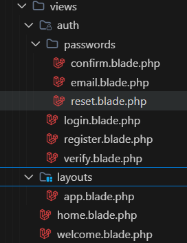
2. Konfigurasi Database
Buka file .env kemudian isikan konfigurasi database berikut ini.
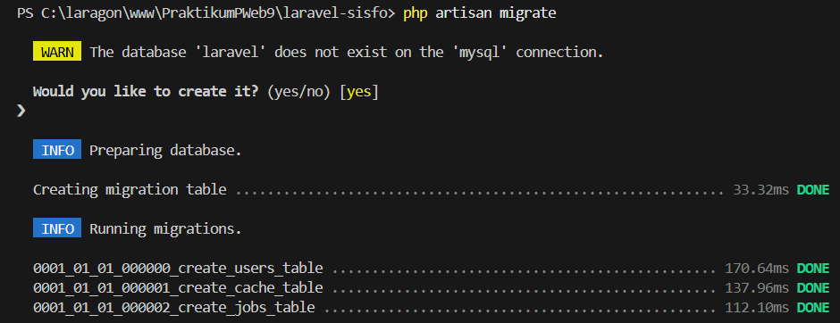
3. User Authentication
User authentication pada studi kasus ini menggunakan fitur authentication bawaan Laravel.
Install package Laravel atau UI
Buka terminal atau cmd kemudian ketikkan perintah "composer require laravel/ui".
Jika berhasil maka akan tampil seperti gambar berikut ini.
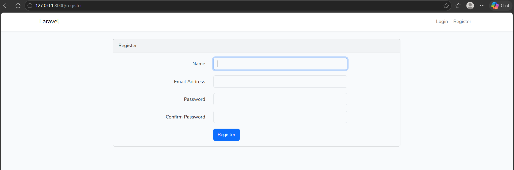
Authentication fitur
Ketikkan perintah php artisan ui bootstrap --auth pada terminal / cmd.
Jika berhasil maka akan tampil seperti gambar berikut.
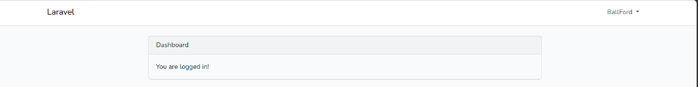
Install dan compile
Ketikkan perintah npm install && npm run dev untuk menginstall dan compile file-file asset bawaan, dengan perintah diatas maka file-file yang dibutuhkan untuk authentication akan di generate secara otomatis, seperti halaman login, register dan forgot password, selain itu juga akan di generate controller auth seperti gambar berikut.
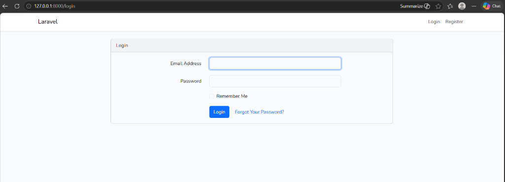
Selain controller juga degenerate view untuk authentication seperti gambar berikut.
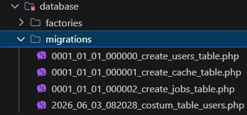
Migration
Ketikkan perintah php artisan migrate maka Laravel akan membuat migration table authentication, jika sebelumnya belum terdapat database maka akan ada konfirmasi dari Laravel apakah akan dibuatkan databasenya atau tidak. Jika migration berhasil maka akan tampil seperti tampilan berikut.
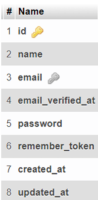
Jika instalasi berhasil maka aplikasi sisfo sudah memiliki fitur authentication bawaan dari Laravel, berikut tampilan fitur authentication dari Laravel.
Halaman Login
Akses url http://127.0.0.1:8000/login pada browser maka akan tampil halaman login seperti berikut.
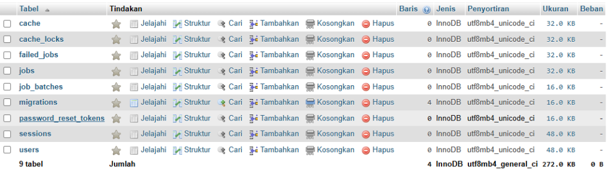
Halaman Register
Akses url http://127.0.0.1:8000/register pada browser maka akan tampil halaman register seperti berikut.
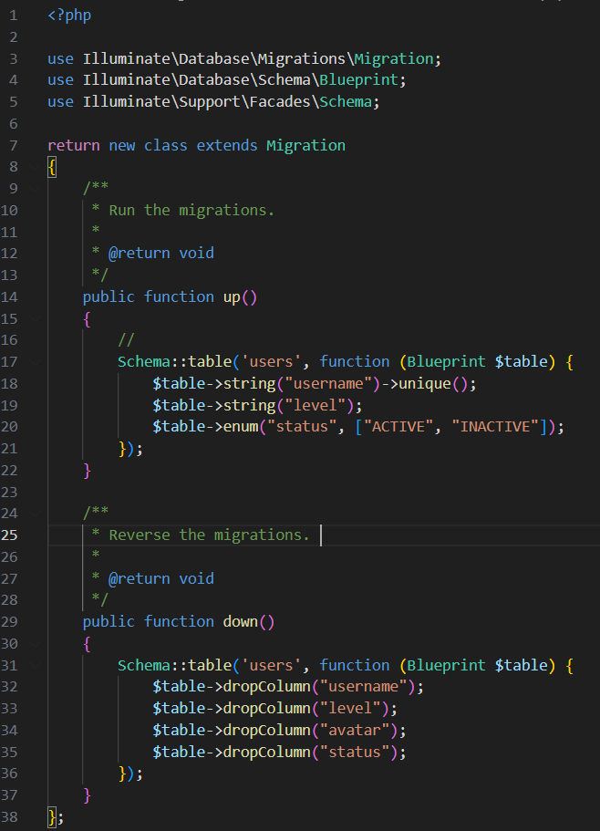
Selanjutnya coba registrasi dan lakukan login ke aplikasi, jika berhasil maka akan tampil seperti gambar berikut.
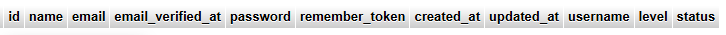
Kesimpulan singkat: Fitur authentication Laravel akan mengenerate controller, model, view dan route authentication secara otomatis, selain itu juga tampilan view sudah menggunakan framework bootstrap sehingga mempermudah dalam membuat fitur authentication pada aplikasi.
Costum Table Users
Authentication Laravel secara otomatis akan mengenerate table Users yang berisi tentang informasi data user, berikut struktur table users.
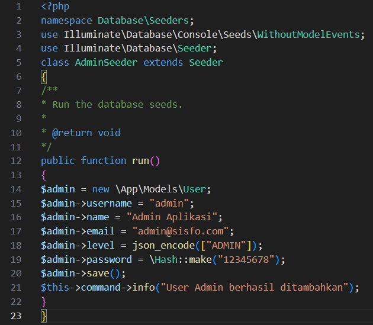
Dari struktur table users diatas maka perlu ditambahkan beberapa field yaitu username, level dan status, maka perlu membuat sebuah migration untuk menambahkan field-field diatas, ketikkan perintah berikut pada terminal atau cmd.
Selanjutnya buka folder database/migration/ seperti gambar berikut.
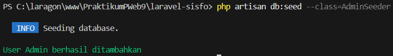
Kemudian buka file yang diakhiri costum_table_users.php dan isikan dengan kode program berikut.
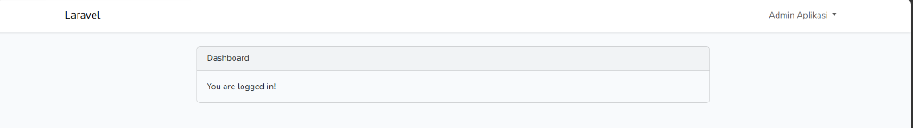
Kemudian jalankan perintah php artisan migrate, jika berhasil maka struktur table users telah berubah sesuai dengan kebutuhan aplikasi.
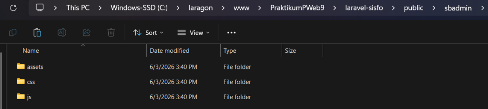
Seeding User
Setelah berhasil melakukan costum table users selanjutnya membuat user menggunakan fitur seeding pada Laravel, buat seeder dengan nama AdminSeeder dengan perintah:
Maka secara otomatis file AdminSeeder.php akan dibuat pada folder database/Seeder. Kemudian buka file tersebut dan buat akun admin seperti kode program berikut.
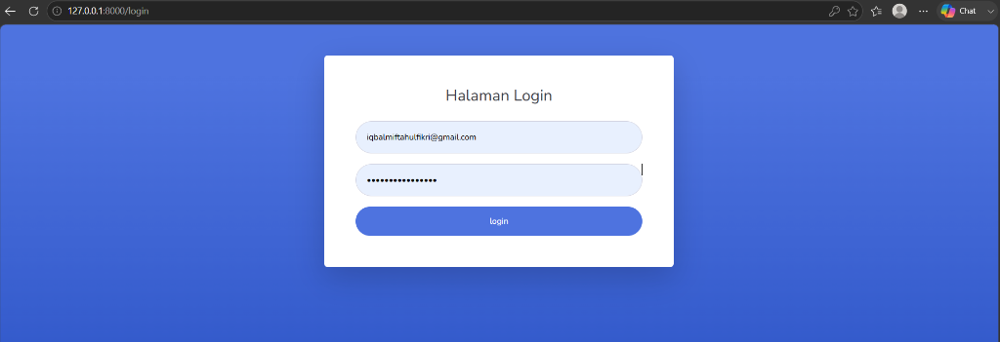
Selanjutnya untuk menjalankan seeding dengan cara menjalankan perintah berikut.
Jika berhasil maka akan tampil seperti gambar berikut.
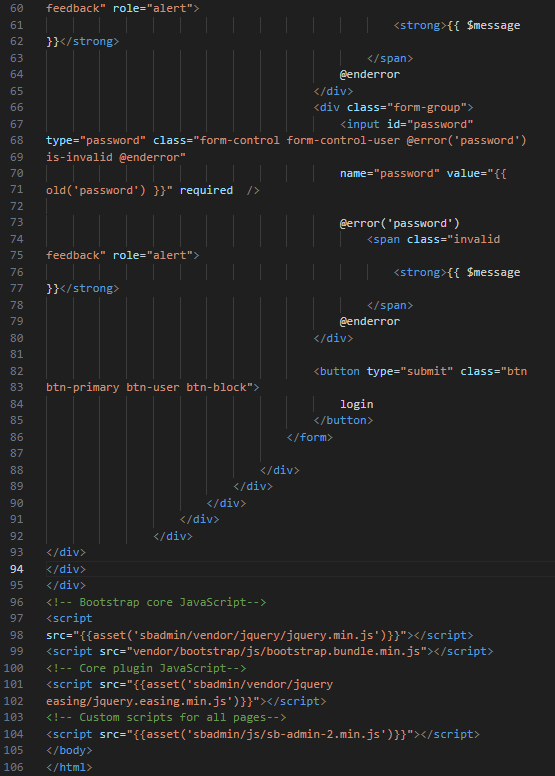
Jika sudah berhasil menambahkan user maka dapat login ke aplikasi menggunakan akun tersebut.
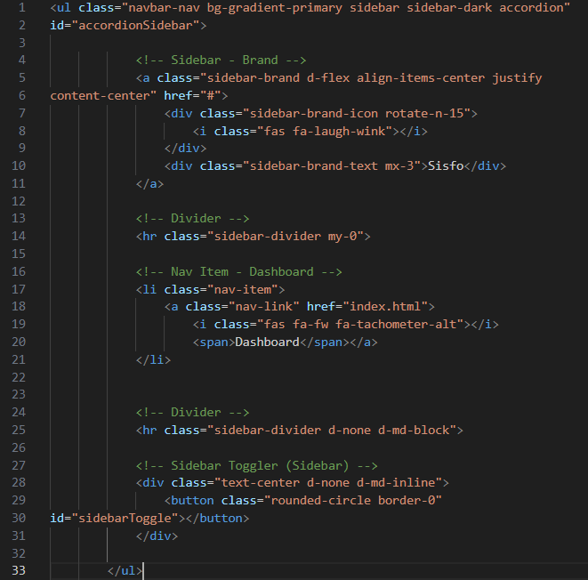
4. Templating atau Layouting
Authentication Laravel secara otomatis mengenerate tampilan dashboard aplikasi, Langkah selanjutnya kita akan konfigurasi tampilan aplikasi sesuai dengan template yang kita pilih, ada studi kasus ini kita akan menggunakan template SB Admin 2 dengan framework bootstrap, silahkan download template pada link https://startbootstrap.com/theme/sb-admin-2 kemudian ekstrak, selanjutnya buat folder pada public project Laravel dengan nama sbadmin dan copy paste kan seluruh asset template sbadmin kedalam folder tersebut.
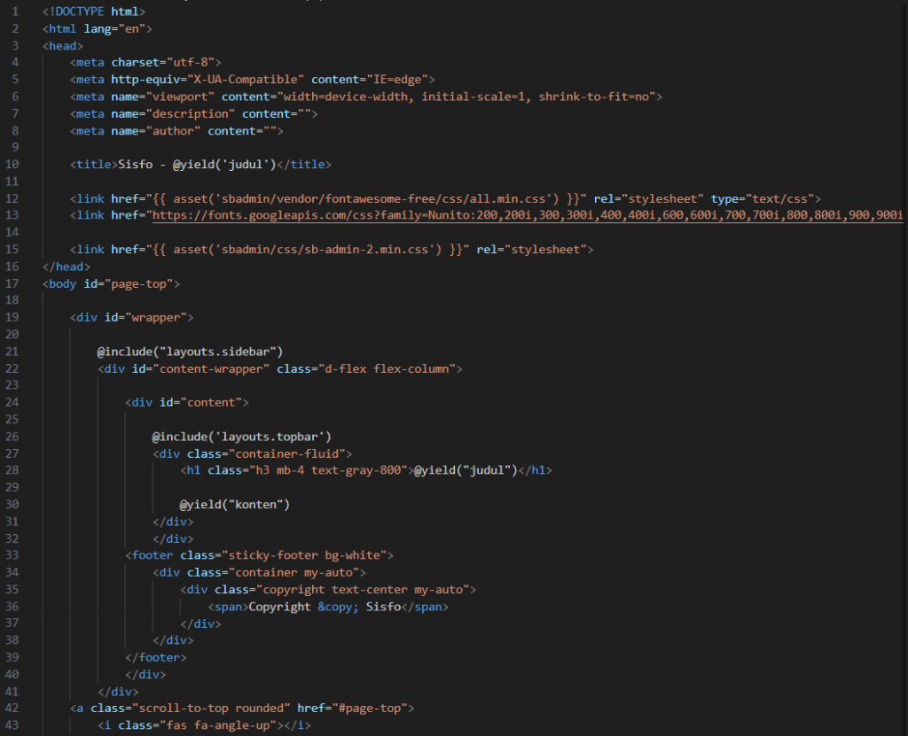
Halaman Login Aplikasi
Buka file app.blade.php pada folder view/layouts kemudian ganti dengan kode program dibawah ini.
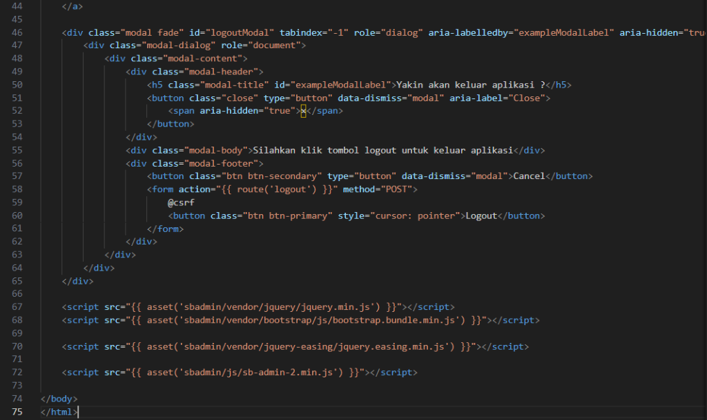
Kode tersebut adalah struktur halaman login untuk sebuah aplikasi web yang dibangun menggunakan framework Laravel dan template desain antarmuka SB Admin 2. Kode ini berfungsi untuk menampilkan kotak formulir di tengah layar yang meminta pengguna memasukkan email dan kata sandi agar dapat masuk ke dalam sistem. Selain mengatur tampilan visualnya dengan latar belakang gradasi dan tata letak yang responsif, kode tersebut juga telah terintegrasi dengan fungsi keamanan bawaan Laravel dan sistem validasi yang akan otomatis menampilkan pesan peringatan jika email atau kata sandi yang dimasukkan salah atau kosong.
Sehingga tampilan login akan berubah seperti gambar dibawah ini.
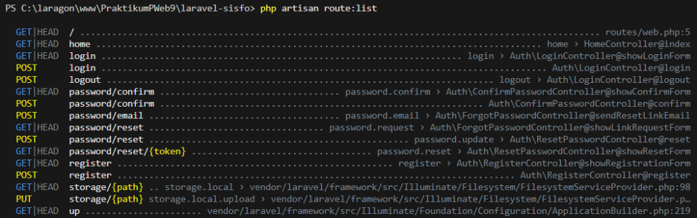
Halaman Global (Layout Utama)
Selanjutnya membuat layout global yang mana layout ini akan digunakan sebagai layout utama aplikasi dan view-view lain akan mengambil resource disini, karena app.blade.php sudah digunakan untuk view login, maka kita perlu membuat layout baru, buat file baru dengan nama main.blade.php pada folder view/layouts dan isikan dengan kode program berikut ini.
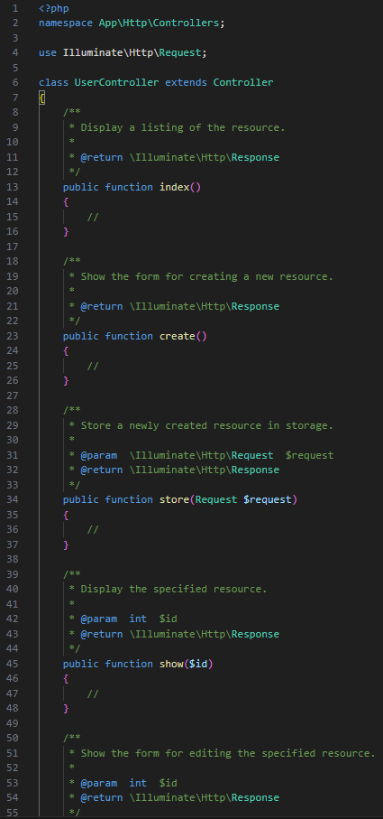
Kode tersebut adalah template utama untuk halaman dashboard aplikasi web yang dibangun menggunakan framework Laravel dan antarmuka SB Admin 2. Kode ini berfungsi sebagai kerangka halaman utuh yang secara otomatis mengatur letak tata letak permanen seperti sidebar, topbar, footer, dan jendela pop-up konfirmasi logout, sekaligus memuat semua CSS maupun fungsi JavaScript. Melalui perintah seperti @yield, template ini menyediakan ruang kosong agar halaman web lain dapat dengan mudah menyisipkan judul dan isi utamanya ke dalam kerangka tersebut tanpa perlu menulis ulang seluruh struktur HTML dari awal untuk setiap halaman yang berbeda.
Sidebar
Buat file pada folder layouts dengan nama sidebar.blade.php dan isi dengan kode program berikut.
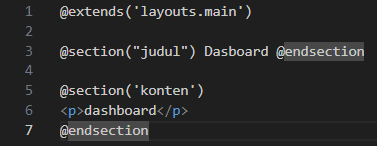
Kode tersebut adalah berfungsi untuk membuat sebuah menu sidebar interaktif pada antarmuka aplikasi web. Kode ini membangun struktur visual yang berurutan dari atas ke bawah, diawali dengan bagian merek atau logo yang menampilkan nama aplikasi beserta sebuah ikon wajah tersenyum, diikuti oleh sebuah garis pembatas, lalu terdapat sebuah link untuk mengarahkan pengguna ke halaman utama lengkap dengan ikon speedometer, dan diakhiri dengan sebuah tombol di bagian paling bawah yang berfungsi untuk melipat atau melebarkan ukuran menu samping tersebut agar tampilan layar bisa disesuaikan menjadi lebih luas atau lebih padat.
Topbar
Buat file pada folder layouts dengan nama topbar.blade.php dan isi dengan kode program berikut.
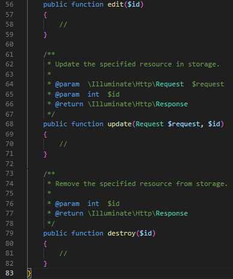
Kode tersebut berfungsi untuk membangun menu topbar pada antarmuka aplikasi web. Kode ini berfungsi untuk menyediakan bilah navigasi yang memuat dua fitur utama, sebuah tombol bergaris tiga di sebelah kiri yang berguna untuk memunculkan atau menyembunyikan menu samping saat diakses melalui perangkat layar kecil (seperti smartphone), dan sebuah informasi akun di sudut kanan atas. Area informasi akun tersebut menggunakan sistem dari framework Laravel untuk secara otomatis mendeteksi dan menampilkan nama serta foto profil pengguna yang sedang masuk ke dalam sistem, di mana saat bagian profil itu diklik, ia akan memunculkan pilihan menu ke bawah yang berisi akses pintas ke halaman Profile, Settings, serta tombol Logout untuk keluar dari aplikasi yang terhubung dengan jendela pop-up konfirmasi.
Cara penggunaan layouts main.blade.php
Sebagai contoh kita akan menggunakan view home.blade.php, buka file tersebut dan isikan dengan kode program berikut.
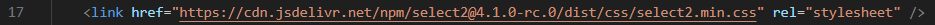
Untuk menggunakan layouts main menggunakan @extends('layouts.main') sehingga seluruh tampilan main.blade.php akan ditampilkan pada view home, untuk menampilkan data judul pada layout main dengan perintah @section('judul')Dashboard @endsection dan konten dengan cara @section('judul')Dashboard @endsection.
Jika konfigurasi layout berhasil maka akan tampil seperti gambar berikut.
5. Manajemen Users
Selanjutnya membuat fitur manajemen users, kita akan menggunakan fungsi keseluruhan CRUD maka kita akan membuat controller resource, buka terminal/CMD kemudian ketikkan perintah berikut.
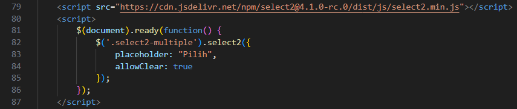
Sehingga jika dilihat pemetaan route php artisan route:list menjadi seperti gambar di bawah ini.
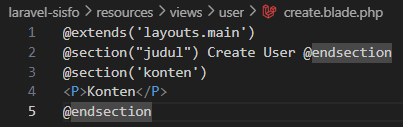
File UserController Resource
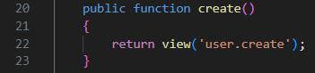
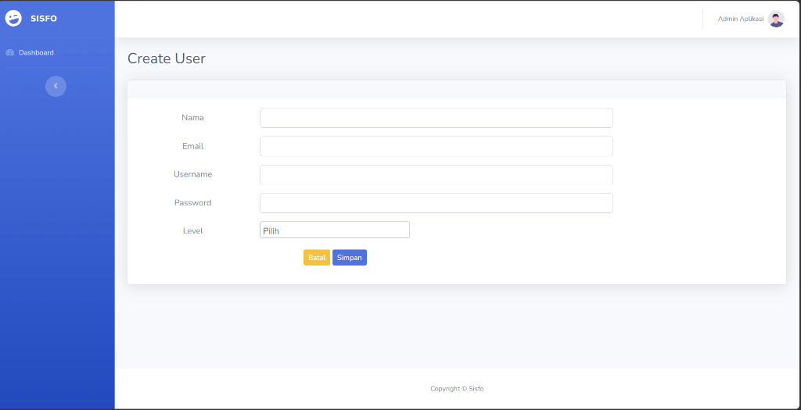
Kedua tersebut menampilkan Resource Controller dengan nama UserController. Kode ini adalah sebuah kerangka dasar untuk mengelola operasi CRUD (Create, Read, Update, Delete). Setiap fungsi yang saat ini masih kosong tersebut sudah diplot untuk tugas spesifik, index untuk menampilkan daftar seluruh data pengguna, create untuk memunculkan formulir tambah data baru, store untuk menyimpan data baru ke database, show untuk melihat detail satu pengguna secara spesifik, edit untuk memunculkan formulir ubah data, update untuk memproses dan menyimpan perubahan tersebut, serta destroy untuk menghapus data pengguna, sehingga programmer hanya perlu mengisi instruksi detail di dalam kurung kurawal masing-masing fungsi tanpa harus membangun pondasi utamanya dari nol.
Create Users
Route untuk menampilkan view form tambah data users adalah users/create silahkan buka file UserController kemudian pada action create edit kode program menjadi seperti berikut.

Perintah return view('user.create') artinya menampilkan view create pada folder user, selanjutnya buat folder user didalam folder view, kemudian tambahkan file create.blade.php dan isikan dengan kode program berikut ini.

Selanjutnya tambahkan file css dan javascript select2 kedalam layout main.blade.php.
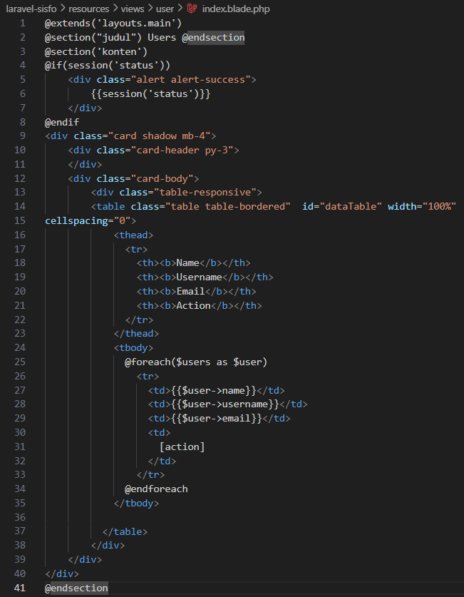
Nanti saat membuat form penambahan user, select box akan otomatis berubah menjadi tampilan Select2 yang rapi dan bisa dicari.
Selanjutnya membuat form inputan create user, edit user/create.blade.php menjadi seperti kode program berikut.
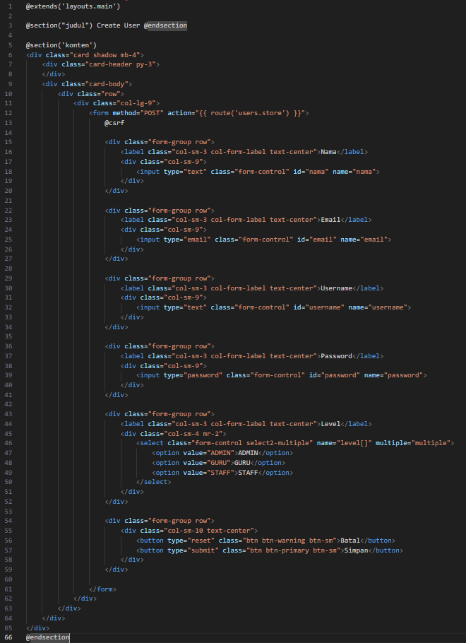
Sehingga tampilan form inputan user menjadi seperti gambar dibawah ini.

Selanjutnya buka action store pada UserController kemudian isikan kode program berikut.
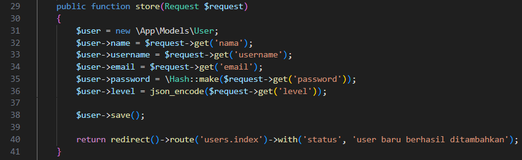
Form create user menggunakan method POST yang akan dikirimkan ke action store dengan route users.store, selanjutnya pada action store akan ditangkap isi form create user dengan cara $request->get('nama input') kemudian disimpan pada table user dengan cara instance model User dengan cara $user = new \App\Models\User setelah itu assign sesuai dengan nama field. Untuk menyimpan kedalam database User menggunakan perintah $user->save, jika data berhasil disimpan akan di redirect ke route users.index dengan membawa session status.
Read / List Users
Selanjutnya setelah fungsi create selesai kita akan menampilkan data user, untuk menampilkan data user kita akan menggunakan method GET yaitu http://localhost/users yang mana route ini merupakan action index pada UserController, buka action index kemudian edit menjadi seperti kode program berikut.
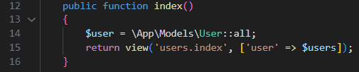
$users]); }">Selanjutnya buat file dengan nama index.blade.php pada folder views/user dan isi dengan kode program berikut.

Kode tersebut adalah tampilan halaman web yang berfungsi untuk menyajikan daftar data pengguna ke dalam bentuk tabel yang rapi. Kode ini bekerja dengan cara meminjam kerangka desain utama dari file layouts.main, lalu menyisipkan judul halaman Users dan mengisi ruang utamanya dengan beberapa elemen. Di bagian awal konten, sistem akan mendeteksi dan menampilkan pesan notifikasi berwarna hijau jika ada tindakan sebelumnya yang berhasil dilakukan, selanjutnya, kode tersebut membangun sebuah tabel yang dilengkapi perintah perulangan otomatis untuk mengambil seluruh data pengguna dari database dan menampilkannya baris demi baris ke dalam kolom Nama, Username, dan Email, lengkap dengan satu kolom tambahan yang nantinya akan digunakan untuk meletakkan tombol seperti edit atau hapus.
Karena menggunakan datatables tambahkan file css datatable pada bagian head main.blade.php dan file js datatables pada bagian bawah main.blade.php.
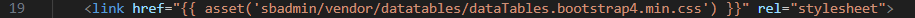
Selanjutnya menambahkan button untuk membuka form tambah user seperti kode program berikut.
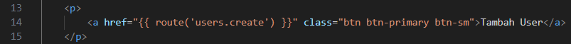
Sehingga tampilan list user menjadi seperti gambar dibawah ini.
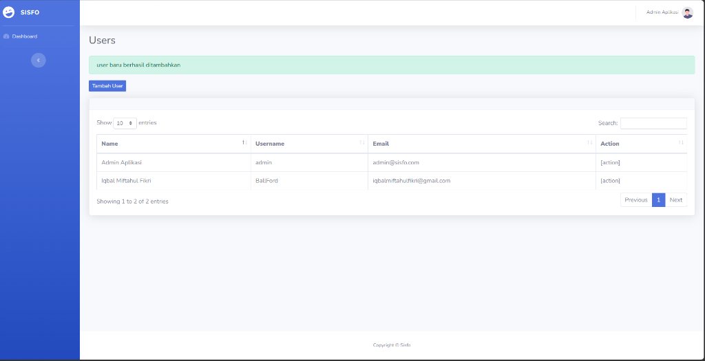
Update Users
Selanjutnya untuk melakukan proses update data user terlebih dahulu kita buatkan tombol action yang mengarahkan pada route users/edit/{user}/edit atau action edit pada UserController untuk menampilkan form dan menggunakan route users/edit/{user} untuk method PUT. Pertama-tama kita akan membuat tombol edit pada tampilan list user, silahkan buka file user/index.blade.php pada kolom [action] ganti dengan kode berikut ini.
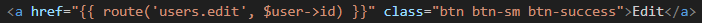
Jika salah satu tombol diatas diklik maka akan menghasilkan string url http://localhost/users/{user}/edit yang mana {user} merupakan id dari user yang di klik. Selanjutnya buka action edit pada UserController dan isikan dengan kode program berikut.
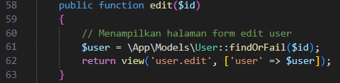
$user]); }">Kode diatas akan mengambil data user berdasarkan id user yang didapatkan dan ditampung pada variable $user dan dikrimkan ke view user.edit, silahkan buat view didalam folder user/edit.blade.php dan isikan dengan kode program berikut.
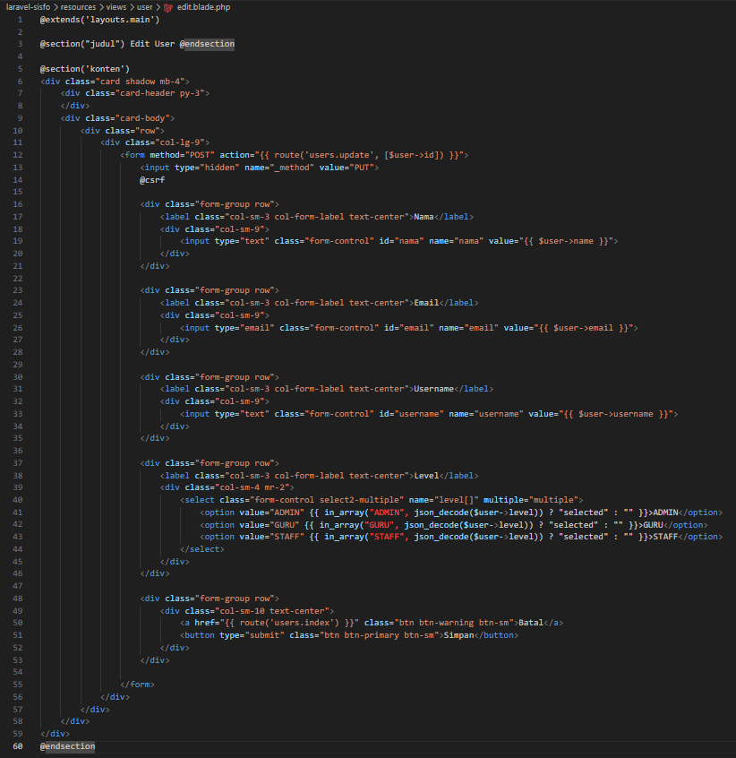
Kode tersebut berfungsi untuk menampilkan formulir pembaruan data pengguna. Kode ini meminjam tata letak utama aplikasi dan menyajikan sebuah kotak formulir yang secara otomatis sudah memuat informasi pengguna saat ini seperti Nama, Email, Username, serta daftar pilihan hak akses (Level) yang memungkinkan pemilihan ganda dan sudah tertandai sesuai data sebelumnya. Formulir ini juga telah disematkan kode keamanan pelindung bawaan Laravel serta instruksi pengiriman khusus (PUT) agar sistem mengenali bahwa aktivitas ini bertujuan menimpa data lama, sehingga ketika tombol Simpan diklik, semua perubahan akan langsung dikirim untuk diperbarui ke dalam database, sementara tombol Batal tersedia untuk menghentikan proses dan mengembalikan pengguna ke halaman daftar nama.
Sehingga tampilan form edit user menjadi seperti gambar berikut ini.
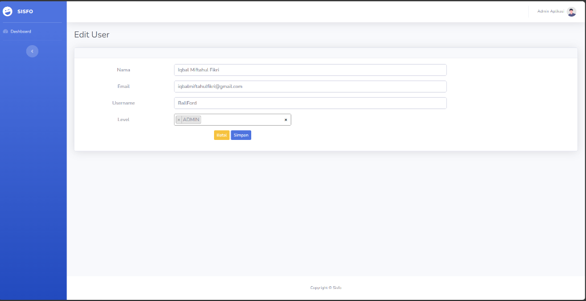
Selanjutnya buka action update pada UserController kemudian isikan dengan kode program berikut ini.
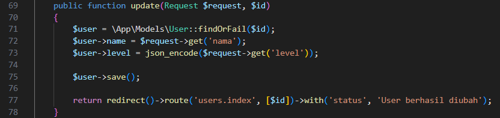
Selanjutnya kita akan mencoba melakukan perubahan data user seperti gambar dibawah ini.
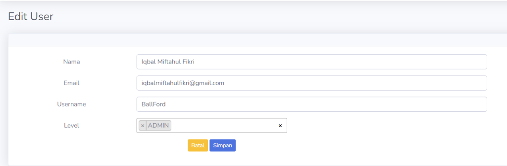
Sesuai gambar diatas kita akan mengubah nama user menjadi Iqbal Miftahul Fikri seperti gambar berikut.
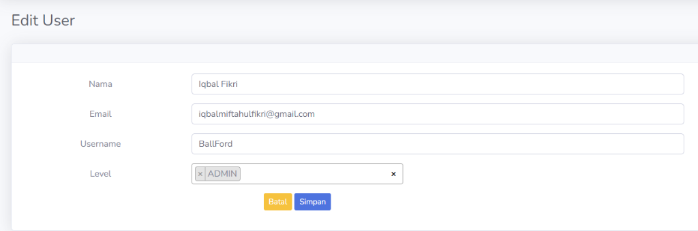
Setelah diganti nama user tersebut klik simpan, jika berhasil maka akan diredirect ke halaman users dengan menampilkan alert success seperti gambar berikut.
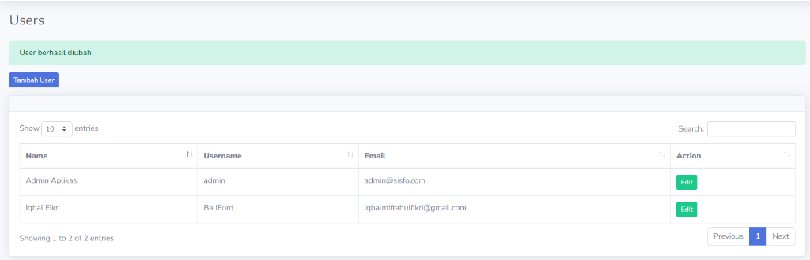
Delete Users
Tambahkan tombol atau link pada list user, silahkan buka view user/index.blade.php dan tambahkan kode program berikut dibawah link edit.
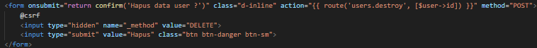
Selanjutnya buka action destroy pada UserController dan isikan dengan kode program berikut ini.
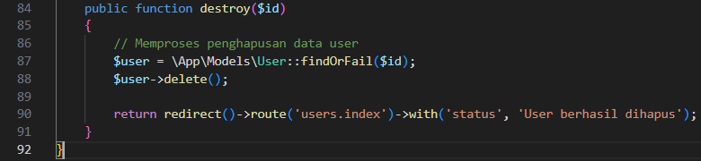
Ketika diklik salah satu tombol hapus maka akan muncul pop up dialog peringatan apakah data akan dihapus seperti gambar dibawah ini.
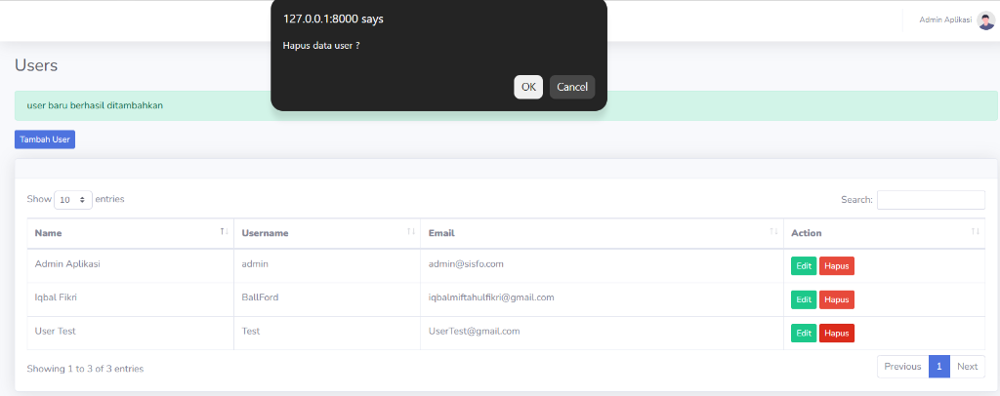
Jika kita tekan oke maka data akan dihapus, jika data berhasil dihapus maka akan muncul pesan seperti gambar berikut.
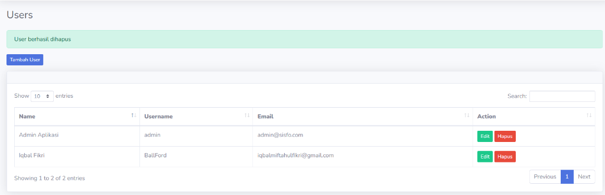
Menambahkan Menu Users di Sidebar
Silahkan buka view Layouts/sidebar.blade.php kemudian tambahkan kode program berikut.
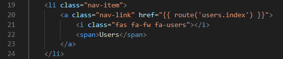
Sehingga pada aplikasi akan muncul menu users seperti gambar berikut ini.
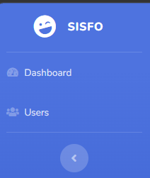
D. Kesimpulan
Berdasarkan praktikum yang telah dilakukan, dapat disimpulkan bahwa framework Laravel sangat mempermudah dan mempercepat proses pengembangan aplikasi Sistem Informasi Sekolah. Fitur authentication bawaan dari Laravel mampu men-generate controller, model, view, dan route secara otomatis, sehingga pengembang tidak perlu membangun sistem login dan registrasi dari awal. Kemudahan ini juga didukung oleh fleksibilitas Laravel dalam memodifikasi struktur tabel bawaan melalui perintah migration serta otomasi pengisian data pengguna awal melalui fitur seeder.
Selain fungsionalitas backend, integrasi antarmuka juga berjalan secara efisien melalui sistem templating menggunakan engine Blade. Penggunaan template SB Admin 2 yang dipadukan dengan pemisahan komponen layout (seperti sidebar, topbar, dan konten utama) membuat kode tampilan lebih rapi, terpusat, dan mudah dikelola. Ditambah dengan pemanfaatan Controller Resource, pembuatan modul Manajemen Users (CRUD) menjadi jauh lebih ringkas dan terstruktur karena pemetaan route dan metode operasi data telah diatur secara otomatis oleh Laravel.
Lihat Repository GitHub